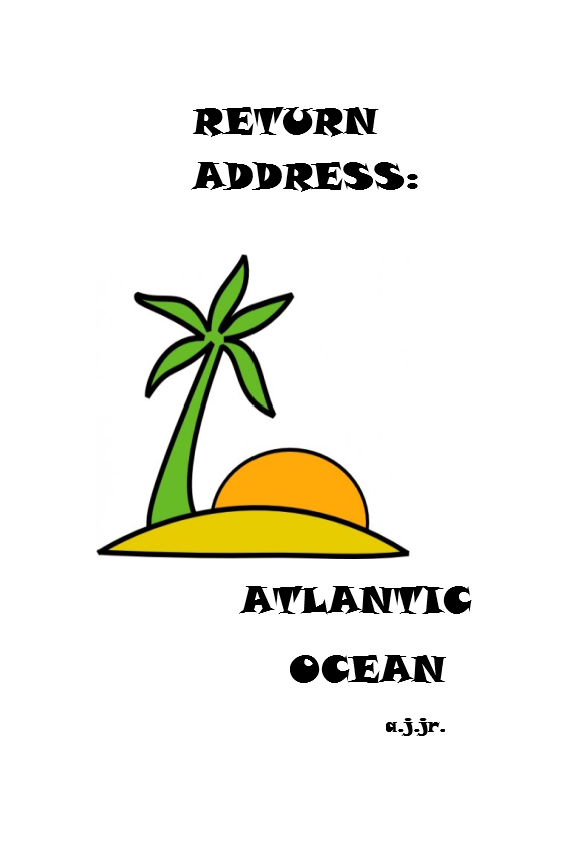

return address: atlantic ocean by a.j.jr

Laugh a little with a look back at some of the best columns—published and not
published—written for THE SANDPAPER newspaper of Long Beach Island New Jersey.
Follow the musings of a retired 8 th grade Science teacher as he humorously looks at Boomer
memories and life on an island in the Atlantic Ocean.